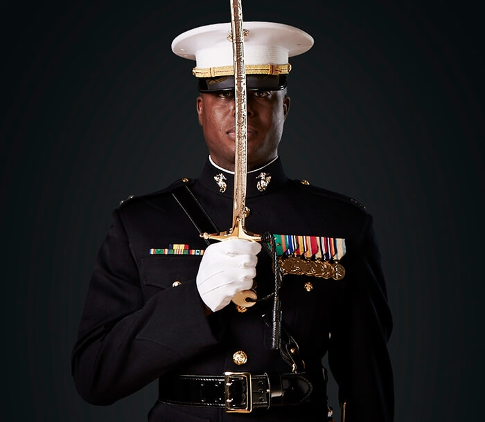
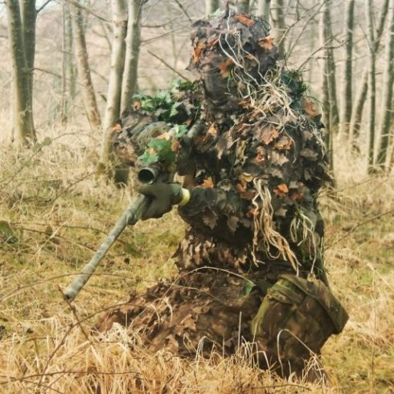

United States Marine Corp

The United States Marine Corps, also referred to as the United States Marines or U.S. Marines, is a branch of the United States Armed Forces responsible for conducting expeditionary and amphibious operations with the United States Navy as well as the Army and Air Force.
Military Police

The Royal Military Police is the part of a Military that is responsible for the policing of army service personnel, and for providing a military police presence both in the home country and while service personnel are deployed overseas on operations and exercises.
Special Reconnaissance
Regiment

The Royal Military Police is the part of a Military that is responsible for the policing of army service personnel, and for providing a military police presence both in the home country and while service personnel are deployed overseas on operations and exercises.